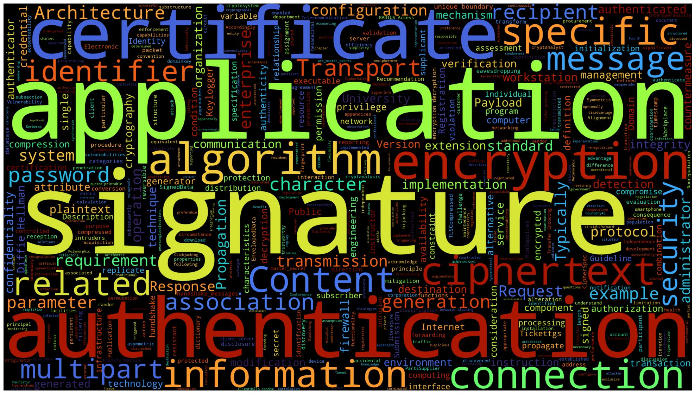

Me with alot of Mes

ML Researcher & Data Systems Architect
Bridging unsupervised learning with enterprise systems. Crafting production-grade ML solutions for high-dimensional time-series data streams.
Distributed Real-time Inference Framework for Time-series. A scalable system for streaming anomaly detection in enterprise environments.
View All Projects →Time-Series eXplainability engine. Interpretable change point detection for complex temporal datasets using unsupervised learning.
See Publications →Data Systems eXperience. An extensible architecture for multi-modal data stream processing with real-time feature engineering.
Research Details →
I'm always interested in discussing research, opportunities, or collaboration on data systems and machine learning projects.